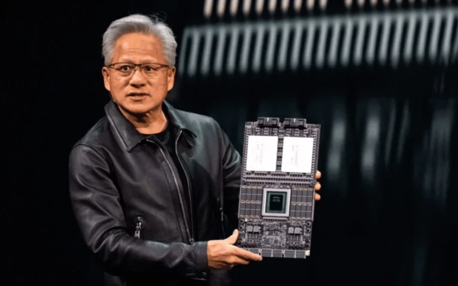

NOTICIAS DA SEMANA
NVIDIA aprova memória HBM4 da Samsung para aceleradores de IA da geração Vera Rubin
A HBM4 da Samsung recebeu o aval da NVIDIA e está liberada para abastecer os aceleradores de inteligência artificial da plataforma Vera Rubin. A confirmação partiu do próprio CEO da fabricante de GPUs, Jensen Huang, durante passagem por Seul no dia 5 de junho. Foi a primeira vez que a NVIDIA assumiu publicamente que as três maiores fabricantes de memória passaram na qualificação para o padrão HBM4. Além da Samsung, entram na lista a sul-coreana SK Hynix e a norte-americana Micron, todas já em produção dos chips.
